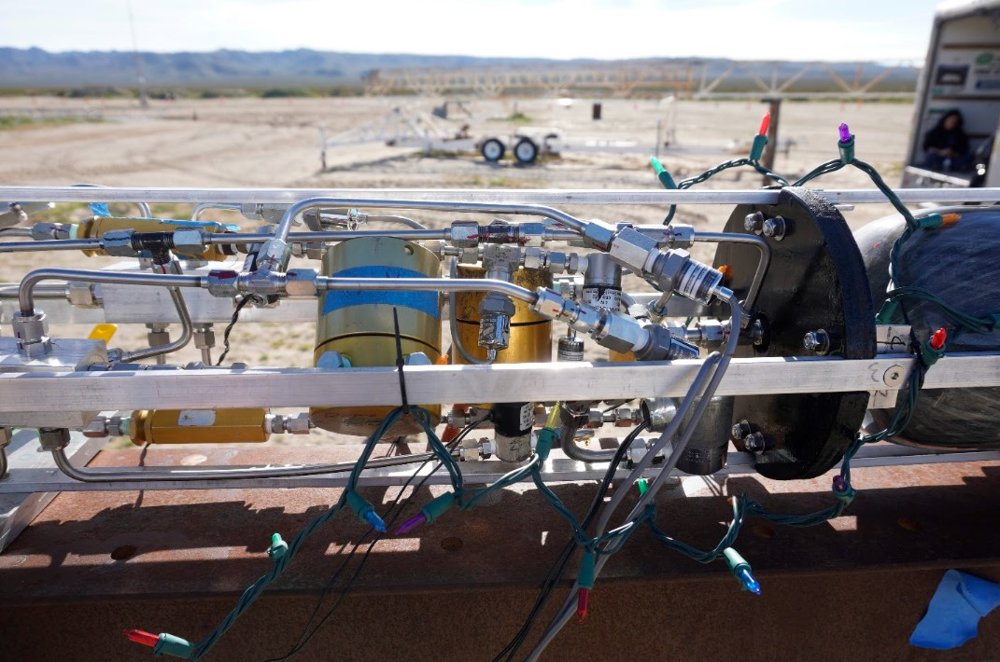
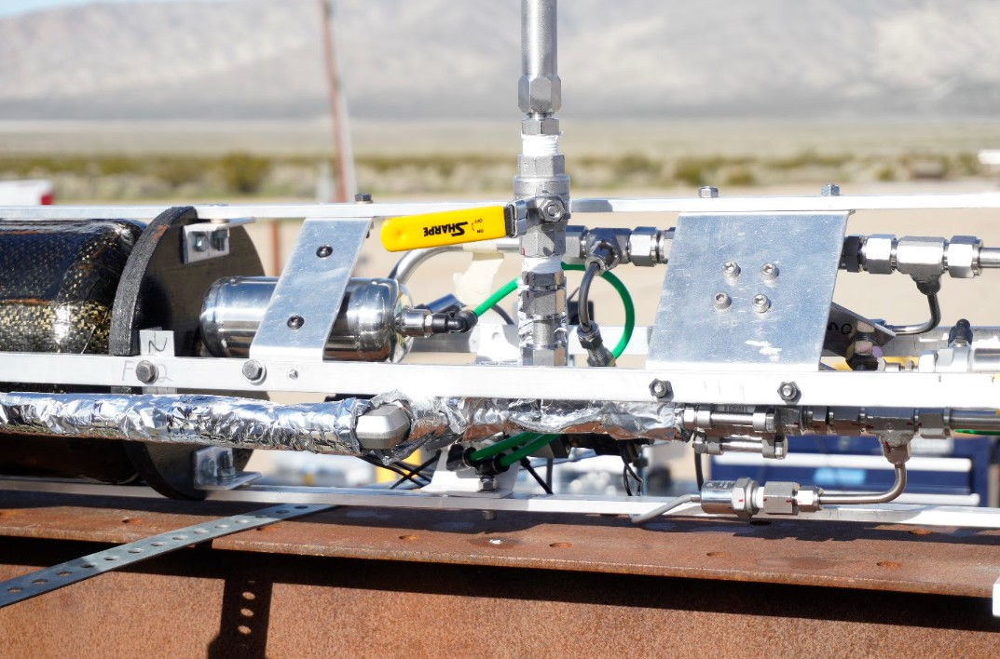
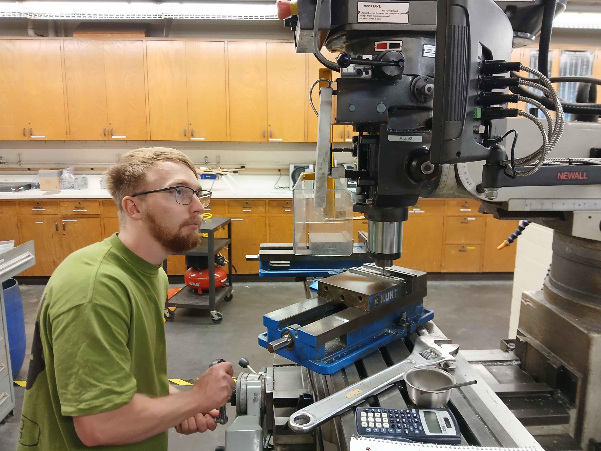

Overview
From CAD to Flight Hardware
After the Theseus fluids system was developed in CAD, I helped manufacture and assemble the physical propulsion hardware installed inside the vehicle.
My work included measuring, cutting, and bending tubing, producing AN flares, installing AN and Swagelok fittings, assembling valves, and integrating fluid lines throughout the upper and lower fluids sections.
During final integration, I also helped modify sections of tubing to improve component clearance, prevent contact between lines, and reduce unwanted stress on the airframe.

Completed high pressure regulation and propellant tank pressurization hardware.
Fluid Hardware
Tubing and System Assembly

Main valves, feed lines, pneumatic actuation hardware, and engine inlet plumbing.
A major portion of my work involved manufacturing and installing tubing between tanks, manifolds, valves, regulators, pressure transducers, and the LR101 engine.
I measured and cut tubing to length, produced the required bends, created AN flares, and installed both AN and Swagelok fittings. Tubes were repeatedly checked against the vehicle assembly to confirm alignment, fitting engagement, component access, and clearance inside the eight inch airframe.
Prepared tubing to match the required vehicle routing.
Produced tube geometry that fit within the airframe.
Installed AN and Swagelok fittings and connected components.
Verified clearance, alignment, and assembly fitment.
Hardware Manufacturing
Main Valve Actuation Hardware
I also manufactured mounting hardware used in the lower fluids section, including hardware supporting the LOX and fuel main valves and the actuator arms used by the pneumatic valve system.
The actuator assembly used a pneumatic piston and mechanical linkage to rotate both propellant main valves. I machined the actuator arms on a manual mill and helped prepare the completed hardware for installation into the vehicle.

Manufacturing main valve actuator arms for the lower fluids assembly.
Final Result
Integrated Propulsion Hardware
My contributions to tubing fabrication, fitting installation, hardware manufacturing, and vehicle integration helped transition the Theseus fluids system from a CAD assembly into operational propulsion hardware. The completed system later proceeded through pressure testing, water flow testing, LOX cold flow, static fire, and launch operations.